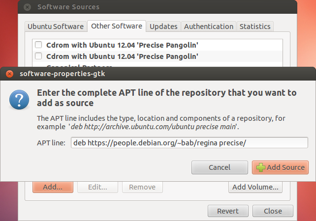

Add Regina's location to your list of repositories. To do this, open the Ubuntu Software Centre and select Edit → Software Sources.
Under Authentication, import Regina's cryptographic signing key. This helps keep your machine secure, and Ubuntu may refuse to install Regina without it. You can download Regina's cryptographic signing key here.

When you import this key file, it should show up in the list of trusted software providers as “Ben Burton <bab@debian.org>”. After the import, you can delete regina-key.txt if you like.

Under Ubuntu Software, enable the Community-Maintained Open Source Software (universe) if this has not been done before.

Under Other Software, click the Add... button. When Ubuntu asks you for an APT line, type:
deb https://people.debian.org/~bab/regina precise/

Unfortunately, the 12.04 Ubuntu Software Centre has a bug which means you will need to finish the installation by typing commands into a terminal window.
Update the list of available packages. In a terminal window, type:
sudo apt-get update

Now you can install Regina. In the same terminal window, type:
sudo apt-get install regina-normal